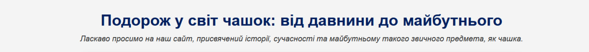
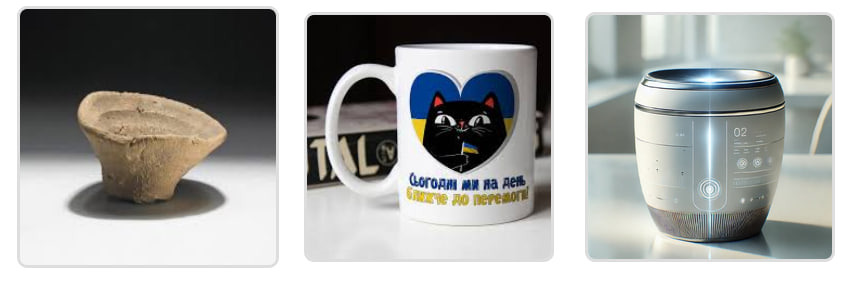
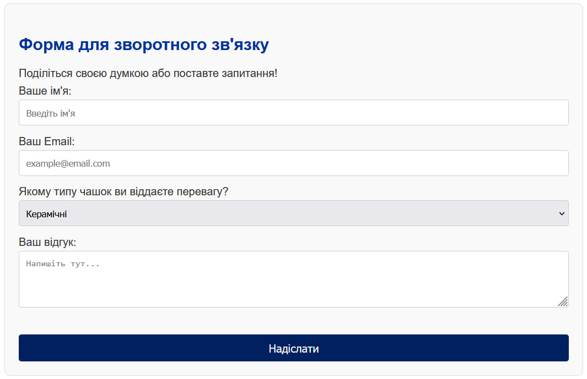
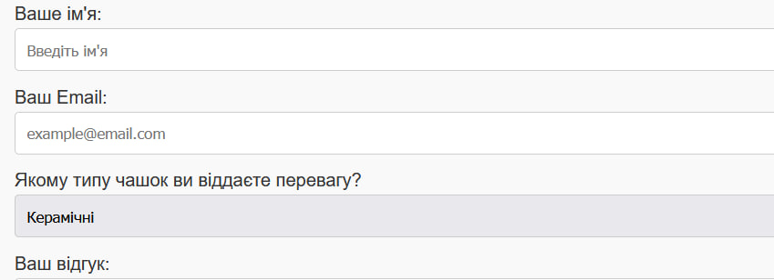
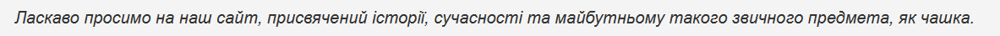
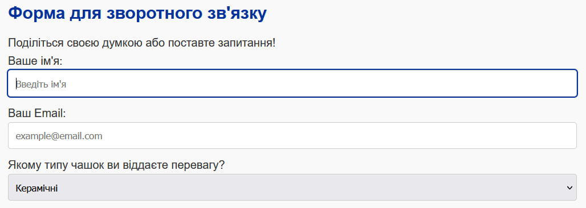
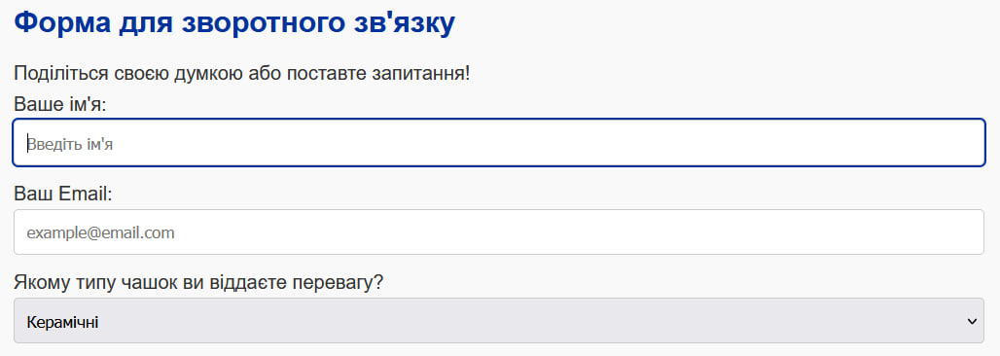
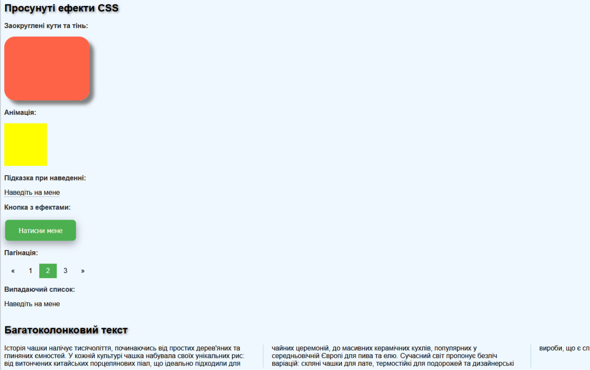

Практична робота №2
Оберіть розділ ліворуч, щоб переглянути вміст.
Тема: КАСКАДНІ ТАБЛИЦІ СТИЛІВ. СЕЛЕКТОРИ ТЕГУ,КЛАСУ, ІДЕНТИФІКАТОРА. СТИЛЬОВЕ ОФОРМЛЕННЯ ТЕКСТОВИХ ЕЛЕМЕНТІВ В HTML-ДОКУМЕНТАХ.
Мета: придбати практичні навички роботи з селекторами, ідентифікаторами, списками, різноманітними властивостями кольору і фону, зовнішними та внутрішними відступами, плаваючими елементами, оформленням текстових елементів.
Посилання на виконані завдання:
Способи підключення стилів
Існує три основних способи додавання CSS до HTML-документа:
- Зовнішня таблиця стилів (External CSS): Стилі знаходяться в окремому
.cssфайлі, що є найкращою практикою для великих сайтів. - Вбудована таблиця стилів (Internal/Embedded CSS): Стилі прописуються всередині тегу
<style>прямо у<head>HTML-документа. Цей метод був використаний у лабораторній роботі. - Вбудовані стилі (Inline CSS): Стилі додаються безпосередньо до HTML-тегу за допомогою атрибута
style.
Приклад вбудованої таблиці стилів (з ПР №2):
CSS-код розміщується в тезі <style> всередині заголовка документа <head>.
<!DOCTYPE html>
<html lang="uk">
<head>
<title>Світ Чашок</title>
<style>
body {
font-family: Arial, sans-serif;
background-color: #f4f4f4;
color: #333;
}
h1 {
text-align: center;
color: #002060;
}
</style>
</head>
<body>
<!-- ... контент сторінки ... -->
</body>
</html>Селектори тегу
Селектори тегу застосовують стилі до всіх HTML-елементів відповідного типу. Наприклад, можна задати однаковий шрифт для всіх параграфів <p> або колір для всіх заголовків <h1>.
Приклад CSS-коду:
У цьому прикладі стилі застосовуються до тегів body (шрифт і фон для всієї сторінки) та h1 (вирівнювання та колір для головного заголовка).
/* Стилізуємо body: фон, шрифт та колір тексту для всього документа */
body {
font-family: Arial, sans-serif;
line-height: 1.6;
background-color: #f4f4f4;
color: #333;
padding: 20px;
}
/* Стилізуємо заголовок h1 */
h1 {
text-align: center;
color: #002060;
}HTML-код, до якого застосовуються стилі:
<body>
<header>
<h1>Подорож у світ чашок: від давнини до майбутнього</h1>
<p>Ласкаво просимо на наш сайт...</p>
</header>
</body>Результат у браузері:
Селектори класу
Селектор класу використовується для вибору та стилізації елементів, яким присвоєно певний клас. На відміну від ID, один і той самий клас можна застосовувати до багатьох елементів на сторінці, що дозволяє створювати групи елементів з однаковим стилем.
Приклад CSS-коду:
Тут клас .gallery використовується для центрування блоку з зображеннями, а дочірній селектор .gallery img додає рамки, відступи та ефект при наведенні до кожного зображення всередині цього блоку.
/* Цей клас застосовано до div-контейнера з зображеннями */
.gallery {
text-align: center;
margin-top: 15px;
}
/* Стилізуємо зображення всередині галереї */
.gallery img {
margin: 10px;
border: 3px solid #ddd;
border-radius: 8px;
transition: transform 0.3s ease;
}
.gallery img:hover {
transform: scale(1.05); /* Ефект при наведенні */
}HTML-код, до якого застосовуються стилі:
<div class="gallery">
<img src="../img/ancient1.jpg" alt="Стародавня глиняна чашка" width="200" height="200">
<img src="../img/modern1.jpg" alt="Сучасна керамічна чашка" width="200" height="200">
<img src="../img/future2.jpg" alt="Концепт чашки майбутнього" width="200" height="200">
</div>Результат у браузері:
Селектори ідентифікаторів
Селектор ідентифікатора (ID) використовується для вибору одного, унікального елемента на сторінці. Атрибут id повинен бути унікальним у межах усього HTML-документа. Це робить його ідеальним для стилізації великих унікальних блоків, таких як хедер, футер або, як у цьому прикладі, форма зворотного зв'язку.
Приклад CSS-коду:
Тут селектор #contact-form застосовує стилі до всього блоку форми, надаючи йому фон, рамку та внутрішні відступи для візуального відокремлення від решти контенту.
/* Стилізуємо всю форму за її унікальним ID */
#contact-form {
background-color: #f9f9f9;
border: 1px solid #ddd;
border-radius: 8px;
padding: 20px;
}HTML-код, до якого застосовуються стилі:
<form action="#" method="post" id="contact-form">
<h2>Форма для зворотного зв'язку</h2>
<p>Поділіться своєю думкою або поставте запитання!</p>
<div>
<label for="user-name">Ваше ім'я:</label><br>
<input type="text" id="user-name" name="userName" placeholder="Введіть ім'я">
</div>
<div>
<label for="user-email">Ваш Email:</label><br>
<input type="email" id="user-email" name="userEmail" placeholder="example@email.com">
</div>
<div>
<label for="cup-type">Якому типу чашок ви віддаєте перевагу?</label><br>
<select id="cup-type" name="cupType">
<option value="ceramic">Керамічні</option>
<option value="glass">Скляні</option>
<option value="porcelain">Порцелянові</option>
</select>
</div>
<div>
<label for="feedback">Ваш відгук:</label><br>
<textarea id="feedback" name="feedback" rows="4" cols="50" placeholder="Напишіть тут..."></textarea>
</div>
<br>
<button type="submit">Надіслати</button>
</form>Результат у браузері:
Інші селектори
Окрім основних селекторів тегу, класу та ID, CSS пропонує багато інших способів для більш точного вибору елементів.
Універсальний селектор ( * )
Застосовує стилі до абсолютно всіх елементів на сторінці. Найчастіше використовується для скидання стандартних стилів браузера (відступів margin та padding) та налаштування моделі блоку box-sizing.
Приклад CSS-коду:
* {
margin: 0;
padding: 0;
box-sizing: border-box;
}Дочірній селектор ( > )
Вибирає тільки ті елементи, які є безпосередніми нащадками (дітьми) вказаного елемента. У цьому прикладі стиль застосовується тільки до тегу <p>, який знаходиться безпосередньо всередині <header>.
Приклад CSS-коду:
header > p {
text-align: center;
font-style: italic;
margin-bottom: 20px;
}HTML-код, до якого застосовуються стилі:
<header>
<h1>Подорож у світ чашок...</h1>
<p>Ласкаво просимо на наш сайт...</p> <!-- Стиль застосується до цього параграфа -->
</header>Селектор атрибута ( [ ] )
Дозволяє вибирати елементи на основі наявності або значення їх атрибутів. У прикладі нижче ми вибираємо всі теги <input>, у яких атрибут type має значення "text" або "email", а також теги <select> та <textarea>.
Приклад CSS-коду:
input[type="text"], input[type="email"], select, textarea {
width: 100%;
padding: 10px;
margin-bottom: 10px;
border-radius: 4px;
border: 1px solid #ccc;
}HTML-код, до якого застосовуються стилі:
<input type="text" id="user-name" name="userName" placeholder="Введіть ім'я">
<input type="email" id="user-email" name="userEmail" placeholder="example@email.com">
<select id="cup-type" name="cupType"> ... </select>
<textarea id="feedback" name="feedback" ...></textarea>Результат у браузері:
Нижче наведено скріншот, що демонструє роботу дочірнього селектора та селектора атрибута.
 CSS: Шрифти, Текст, Таблиці, Фон, Контур, Списки
У цьому розділі наведені приклади застосування різних CSS-властивостей для стилізації елементів веб-сторінки згідно з завданням.
Шрифти та Колір тексту
Властивість font-family задає гарнітуру шрифту для тексту, а color — його колір.
Приклад CSS-коду:
/* Задаємо базовий шрифт для всієї сторінки */
body {
font-family: Arial, sans-serif;
color: #333; /* Основний колір тексту */
}
/* Задаємо інший колір для головного заголовка */
h1 {
color: #002060;
}Фон
Властивість background-color встановлює колір фону для елемента.
Приклад CSS-коду:
/* Задаємо темно-синій фон для заголовка таблиці */
thead {
background-color: #002060;
color: white; /* Колір тексту на цьому фоні робимо білим */
}Контури
Властивість outline дозволяє додати контур навколо елемента, який не є частиною його розмірів. Це часто використовується для візуального виділення активних елементів, наприклад, полів форми при фокусуванні.
Приклад CSS-коду:
/* Додаємо синій контур при фокусі на полях вводу */
input:focus, select:focus, textarea:focus {
outline: 2px solid #003399;
}CSS-властивості для Таблиць та Списків
Для таблиць часто використовують border-collapse, щоб об'єднати рамки комірок. Для списків — padding-left для керування відступом.
Приклад CSS-коду:
/* Стилі для таблиці */
table {
width: 100%;
border-collapse: collapse; /* Прибирає подвійні рамки */
}
th, td {
border: 1px solid #ccc;
padding: 12px;
}
/* Стилі для списків */
ul, ol {
padding-left: 40px; /* Відступ зліва для маркерів/нумерації */
}Результат у браузері:
На скріншоті нижче показано стилізовану таблицю (фон заголовка, рамки), а також поля форми (контур при фокусі).
 

CSS Просунутий
У цьому розділі наведені приклади застосування просунутих технік CSS для створення тіней, анімацій, інтерактивних елементів та складніших макетів.
1. Заокруглені кути та тіні (для блоків і тексту)
Властивість border-radius створює заокруглені кути, а box-shadow додає тінь до блокових елементів. Властивість text-shadow застосовує тінь до тексту.
Приклад CSS-коду:
.rounded-corners {
border-radius: 25px;
background: Tomato;
padding: 20px;
width: 200px;
height: 150px;
box-shadow: 10px 10px 8px grey;
}
h2 {
text-shadow: 2px 2px 5px grey;
}HTML-код, до якого застосовуються стилі:
<h2>Просунуті ефекти CSS</h2>
<div class="rounded-corners"></div>2. Плавні переходи та анімації
Властивість transition забезпечує плавні зміни стилів, а @keyframes разом з animation дозволяє створювати повноцінні анімації.
Приклад CSS-коду:
@keyframes example-animation {
from {background-color: red;}
to {background-color: yellow;}
}
.animated-box {
width: 100px;
height: 100px;
background-color: red;
animation-name: example-animation;
animation-duration: 4s;
}
.custom-button {
background-color: #4CAF50;
border: none;
border-radius: 8px;
color: white;
padding: 15px 32px;
cursor: pointer;
transition-duration: 0.4s;
}
.custom-button:hover {
background-color: #45a049;
}HTML-код, до якого застосовуються стилі:
<div class="animated-box"></div>
<button class="custom-button">Натисни мене</button>3. Інтерактивні елементи та багатоколонковий макет
За допомогою псевдокласу :hover можна створювати елементи, які з'являються при наведенні курсора. Властивість column-count дозволяє автоматично розділити текст на кілька колонок.
Приклад CSS-коду:
.dropdown {
position: relative;
display: inline-block;
}
.dropdown-content {
display: none;
position: absolute;
background-color: #f9f9f9;
min-width: 160px;
box-shadow: 0px 8px 16px 0px rgba(0,0,0,0.2);
z-index: 1;
}
.dropdown:hover .dropdown-content {
display: block;
}
.multi-column {
margin-top: 40px;
column-count: 3;
column-gap: 40px;
column-rule: 1px solid lightblue;
}HTML-код, до якого застосовуються стилі:
<div class="dropdown">
<span>Наведіть на мене</span>
<div class="dropdown-content">
<a href="#">Посилання 1</a>
<a href="#">Посилання 2</a>
</div>
</div>
<div class="multi-column">
<h2>Історія та різноманіття чашок</h2>
Історія чашки налічує тисячоліття, починаючись від простих дерев'яних та глиняних ємностей. У кожній культурі чашка набувала своїх унікальних рис: від витончених китайських порцелянових піал, що ідеально підходили для чайних церемоній, до масивних керамічних кухлів, популярних у середньовічній Європі для пива та елю. Сучасний світ пропонує безліч варіацій: скляні чашки для лате, термостійкі для подорожей та дизайнерські вироби, що є справжніми витворами мистецтва.
</div>Результат у браузері:
ВИСНОВКИ до ПР №2
Під час виконання практичної роботи №2 я здобув глибокі практичні навички роботи з каскадними таблицями стилів (CSS). Я навчився застосовувати різні види селекторів — тегу, класу та ідентифікатора, а також їх комбінації — для точного вибору та стилізації елементів на веб-сторінці.
Були опановані ключові CSS-властивості для оформлення тексту, шрифтів, фону, контурів та таблиць, що дозволило значно покращити візуальний вигляд мого веб-застосунку "Світ Чашок", зробивши його більш структурованим та привабливим для користувача. Ця робота закріпила розуміння того, як CSS взаємодіє з HTML для створення сучасних та функціональних веб-сторінок.